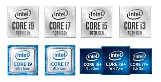
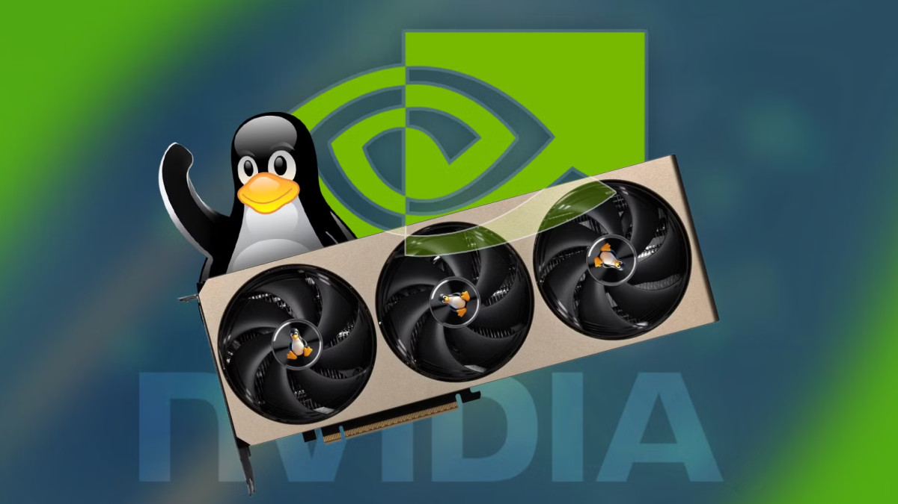
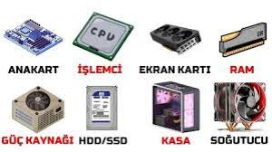
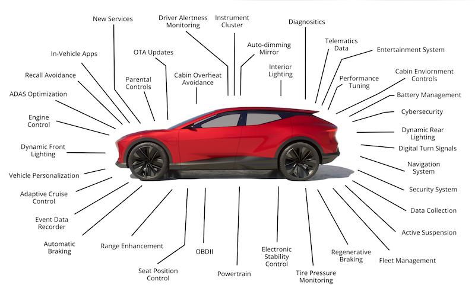

CryEngine
Crytek tarafından geliştirilen CryEngine, özellikle gerçekçi aydınlatma, geniş açık dünya sahneleri ve yüksek seviye çevre detaylarıyla öne çıkan güçlü bir oyun motorudur. Oyunlara örnek: Crysis serisi.
Oyun teknolojileri, oyun motorları, yapay zeka destekli oyun sistemleri, bilgisayar donanımları ve otomotiv tarafındaki yazılım gelişmeleriyle ilgileniyorum.
Gerçekçi grafik, atmosfer tasarımı ve performans optimizasyonu sunan oyun teknolojilerini takip ediyorum.
Yeni nesil ekran kartları, işlemciler ve oyun performansını etkileyen donanım karşılaştırmalarını inceliyorum.
Modern araçlarda kullanılan sürüş destek, sensör birleşimi ve gömülü yazılım çözümlerini araştırıyorum.
Crytek tarafından geliştirilen CryEngine, özellikle gerçekçi aydınlatma, geniş açık dünya sahneleri ve yüksek seviye çevre detaylarıyla öne çıkan güçlü bir oyun motorudur. Oyunlara örnek: Crysis serisi.
Infinity Ward, hızlı tempolu FPS mekanikleri, sinematik görev tasarımları ve çevrim içi rekabet odaklı yapılarıyla tanınan önemli bir oyun stüdyosudur. Oyunlara örnek: Call of Duty serisi.

Frictional Games, psikolojik korku atmosferi, hikaye odaklı ilerleyiş ve oyuncu üzerinde gerilim oluşturan ses/çevre tasarımlarıyla öne çıkan bir stüdyodur. Oyunlara örnek: Amnesia serisi.

Intel, modern bilgisayarların beyni olan işlemcilerde öncü bir rol oynar. Yüksek frekans, çok çekirdekli mimarisi ve düşük güç tüketimi ile oyun performansını doğrudan etkiler. Son nesil işlemciler, yapay zeka destekli görevleri hızlıca işleyerek sistem deneyimini iyileştirir.

Nvidia, oyun dünyasında hemen hemen zorunlu bir öğedir. CUDA teknolojisi ve ray tracing desteği ile gerçekçi grafikler ve yüksek performans sunmaktadır. Linux işletim sistemi ile ortaklık, profesyonel ve oyun geliştiricileri için önemli bir adımdır.

Modern bilgisayarlar, Intel veya AMD işlemcileriyle, Nvidia veya AMD grafik kartlarıyla donatılmaktadır. RAM, SSD ve güç kaynağı gibi diğer bileşenler de sistem performansını belirler. DDR5 bellekler, PCIe 5.0 standartları ve NVMe SSD'ler yüksek hızlı veri aktarımı sağlayarak oyun ve profesyonel uygulamaların sorunsuz çalışmasını garantiler.
Araçlar artık "tekerlekli veri merkezleri" olarak görülüyor. Gömülü yazılımlar, yapay zeka, bağlantılı araç mimarileri ve otonom sürüş teknolojileri, bilgisayar mühendislerinin temel çalışma alanlarıdır.

Otomotiv firmaları ve teknoloji şirketleri, Ar-Ge programları aracılığıyla işbirliği yapmaktadır. Yazılım, siber güvenlik ve veri yönetimi konularında stratejik ortaklıklar oluşturulmaktadır.
İnsan-makine etkileşimi, akıllı cihaz entegrasyonu ve IoT ekosistemi, modern araçların temel tasarım ilkeleri haline gelmiştir. Araçların yazılım güncellemeleriyle sürekli iyileştirilmesi, müşteri memnuniyetini ve güvenliği sağlamaktadır.
Dijital ikizler, robotik sistemler ve gerçek zamanlı veri analizi ile üretim verimliliği artırılmaktadır. Bu teknolojiler, otomotiv endüstrisinin geleceğini ve verimliğini belirlemektedir.